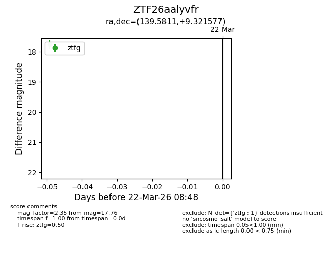
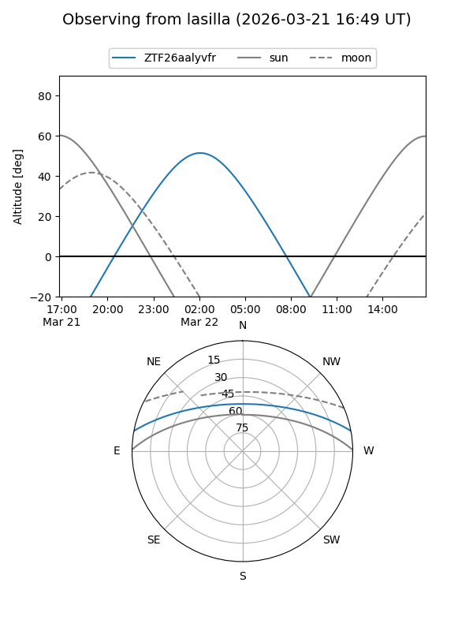
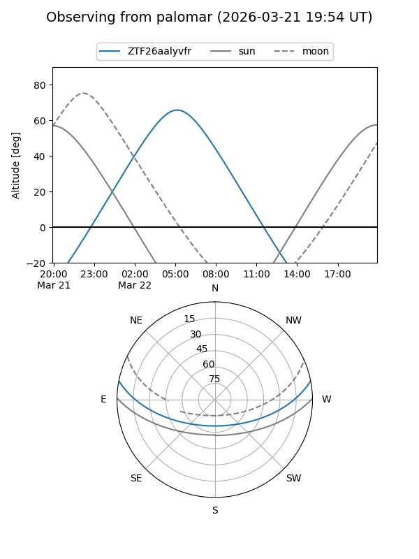

ZTF26aalyvfr
Target ZTF26aalyvfr at 2026-03-22 08:50
Aliases and brokers:
FINK: link
Lasair: link
ALeRCE: link
alt names
ZTF26aalyvfr (ztf,fink_ztf)
Coordinates:
equatorial (ra, dec) = 139.5811,+9.32158
equatorial (HMS+DMS) = 09:18:19.46,+09:19:17.68
galactic (l, b) = (221.9045,+36.79682)
Flags:
Photometry:
last ztfg=17.76
1 ztfg detections
Lightcurve

Visibility


Additional plots